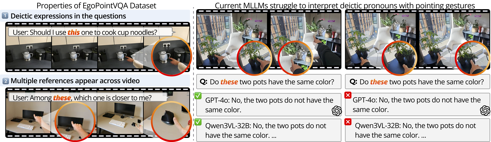
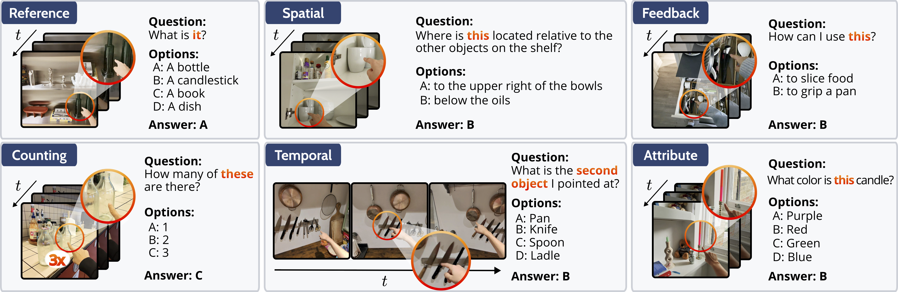
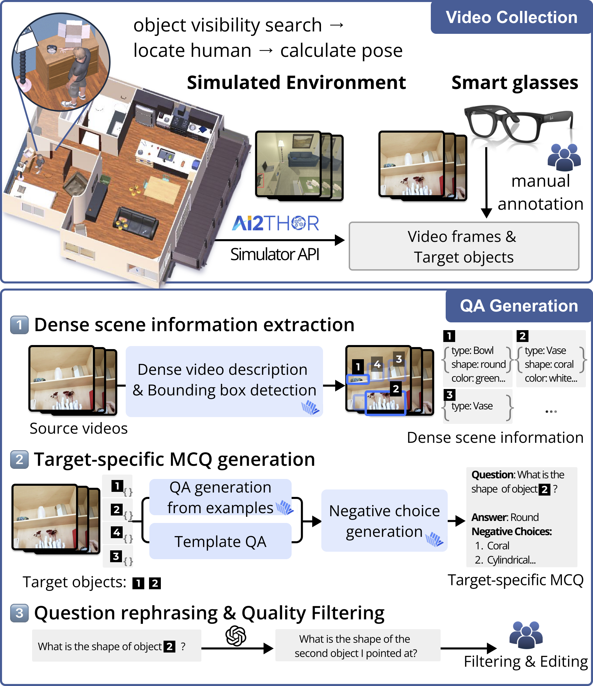
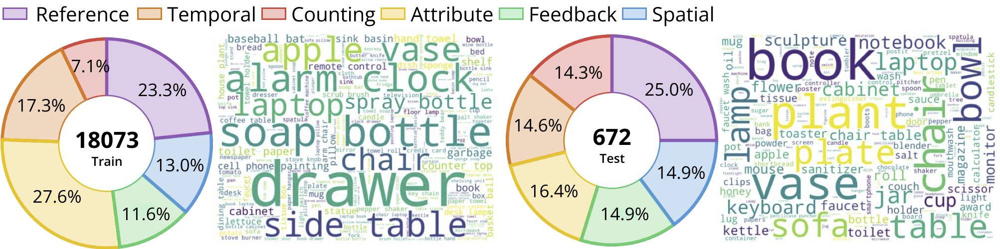
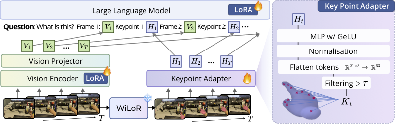

Figure 1. Illustration of EgoPointVQA. Current MLLMs struggle to ground deictic pronouns with pointing gestures.
EgoPointVQA decomposes deictic question answering into six categories, each testing distinct reasoning capabilities.

Figure 2. Task taxonomy and examples from EgoPointVQA.

Figure 3. EgoPointVQA generation pipeline from simulated and real egocentric videos.

Figure 5. EgoPointVQA statistics — task type distributions and common object word clouds.

Figure 6. HINT overall architecture. Vt = visual token, Kt = keypoint feature, Ht = hand intent token.
| Method | Size | Refer. | Temporal | Spatial | Count | Attr. | Feed. | Avg. |
|---|---|---|---|---|---|---|---|---|
| Proprietary Models | ||||||||
| GPT-5 | — | 75.6 | 53.6 | 62.3 | 50.0 | 56.1 | 77.8 | 62.6 |
| GPT-4o | — | 56.1 | 29.5 | 43.1 | 44.8 | 41.5 | 65.7 | 46.8 |
| Open-Source MLLMs ≥ 32B | ||||||||
| Qwen3-VL | 32B | 63.7 | 67.9 | 65.8 | 66.7 | 63.4 | 77.2 | 67.5 |
| InternVL3 | 78B | 71.4 | 71.4 | 62.3 | 45.8 | 68.3 | 80.1 | 66.6 |
| Open-Source MLLMs ≤ 14B | ||||||||
| InternVL3 | 8B | 66.1 | 57.5 | 63.2 | 33.3 | 51.3 | 76.8 | 58.0 |
| InternVL3 | 14B | 63.1 | 66.1 | 61.4 | 50.0 | 58.5 | 77.2 | 62.7 |
| EgoGPT | 7B | 67.3 | 46.4 | 50.9 | 47.9 | 48.8 | 74.1 | 55.9 |
| LLaVA-OneVision | 7B | 54.2 | 42.9 | 53.5 | 35.4 | 46.3 | 67.1 | 49.9 |
| HINT (Ours) | ||||||||
| HINTLLaVA-OV | 7B | 60.7 | 50.0 | 56.1 | 39.6 | 48.8 | 71.1 | 54.4 |
| HINTInternVL3-8B | 8B | 75.0 | 66.1 | 64.9 | 35.4 | 61.0 | 79.8 | 63.7 |
| HINTInternVL3-14B | 14B | 73.8 | 69.6 | 64.9 | 54.2 | 63.4 | 82.5 | 68.1 |
Table 1. HINT (highlighted) consistently improves over baselines. HINT-14B achieves the best average of 68.1%.
| SFT | Hand Intent | Refer. | Temporal | Spatial | Attr. |
|---|---|---|---|---|---|
| ✗ | ✗ | 66.1 | 58.9 | 63.2 | 51.3 |
| ✓ | ✗ | 68.5 | 60.7 | 59.6 | 56.7 |
| ✓ | ✓ | 75.0 | 66.1 | 64.9 | 61.0 |
Table 2. Ablation of HINT components. Combining SFT with Hand Intent Tokens yields the largest gains.
| Hand Intent Modeling | Refer. | Temporal | Spatial |
|---|---|---|---|
| None (SFT only) | 68.5 | 60.7 | 59.6 |
| Visual Keypoints | 57.1 | 60.7 | 61.4 |
| Visual Arrow from Fingertip | 70.2 | 60.7 | 62.3 |
| 3D Keypoints in Text | 68.5 | 55.4 | 58.8 |
| 2D Keypoints in Text | 69.0 | 57.1 | 59.6 |
| HINT (Ours) | 75.0 | 66.1 | 64.9 |
Table 4. Different methods of hand intent modeling. HINT with a learned keypoint adapter outperforms all alternatives.